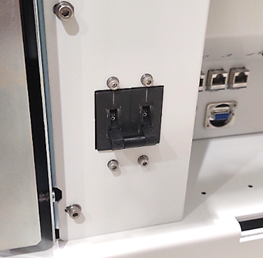
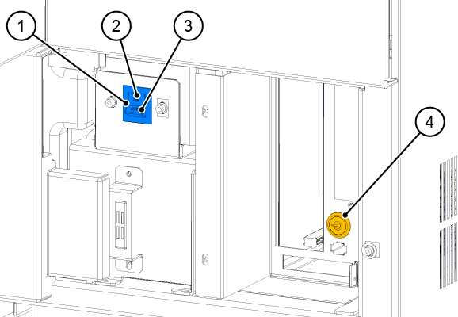
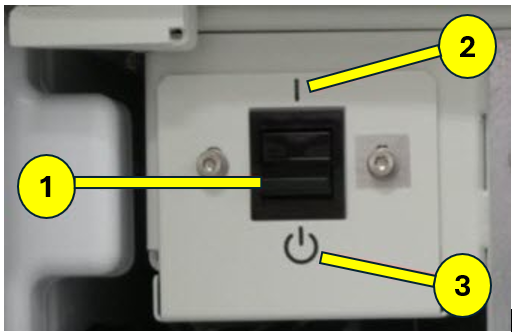

Turning On the Instrument
- Connect the power cable to the power source.
-
Turn on the main breaker at the rear of the instrument.
Figure 60: DxI 9000 Main Breaker 
-
Press the standby switch into the ON position.
Figure 61: Standby Switch and PC Power Button 
1 Standby switch 2 Standby switch ON position 3 Standby switch OFF position 4 PC power button Figure 62: Standby Switch 
1 Standby switch 2 Standby switch ON position 3 Standby switch OFF position - Turn on the monitor for the PC.
-
Select hard drive 0.
Note: You may be required to type a password to unlock the hard drive. The password is Beckman12! or Beckman.
-
Sign in to use the BeckmanAdmin account. See
Signing In to Use the BeckmanAdmin Account for more information.
The Console App and the Machine Control App will start automatically.
-
Initialize the system. See
Initializing the Instrument for more information.